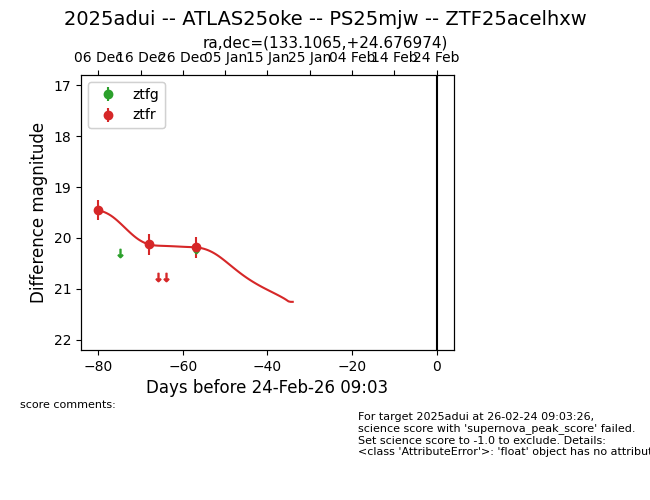
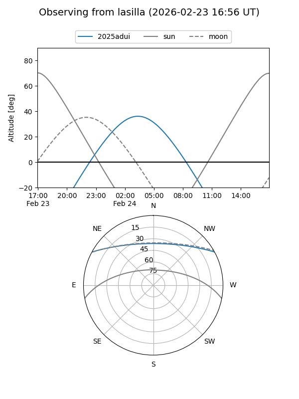
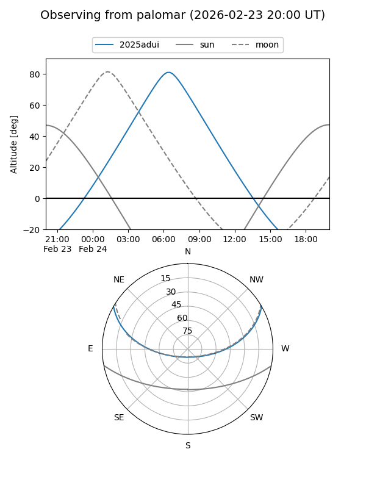
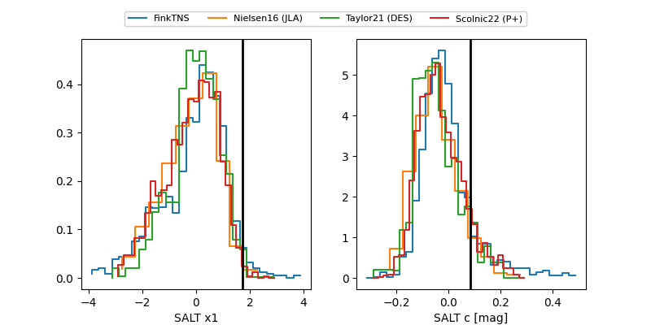

2025adui
Target 2025adui at 2026-01-06 11:06
Aliases and brokers:
FINK:
Lasair:
ALeRCE:
TNS:
YSE:
alt names
ZTF25acelhxw (ztf,fink_ztf)
2025adui (tns,yse)
ATLAS25oke (atlas)
PS25mjw (panstarrs)
Coordinates:
equatorial (ra, dec) = 133.1065,+24.67697
equatorial (HMS+DMS) = 08:52:25.55,+24:40:37.11
galactic (l, b) = (201.2112,+36.70856)
Flags:
Photometry:
last ztfr=20.18
3 ztfr detections
Lightcurve

Visibility


Additional plots
